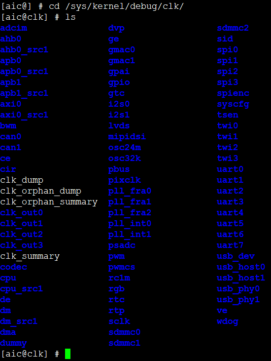
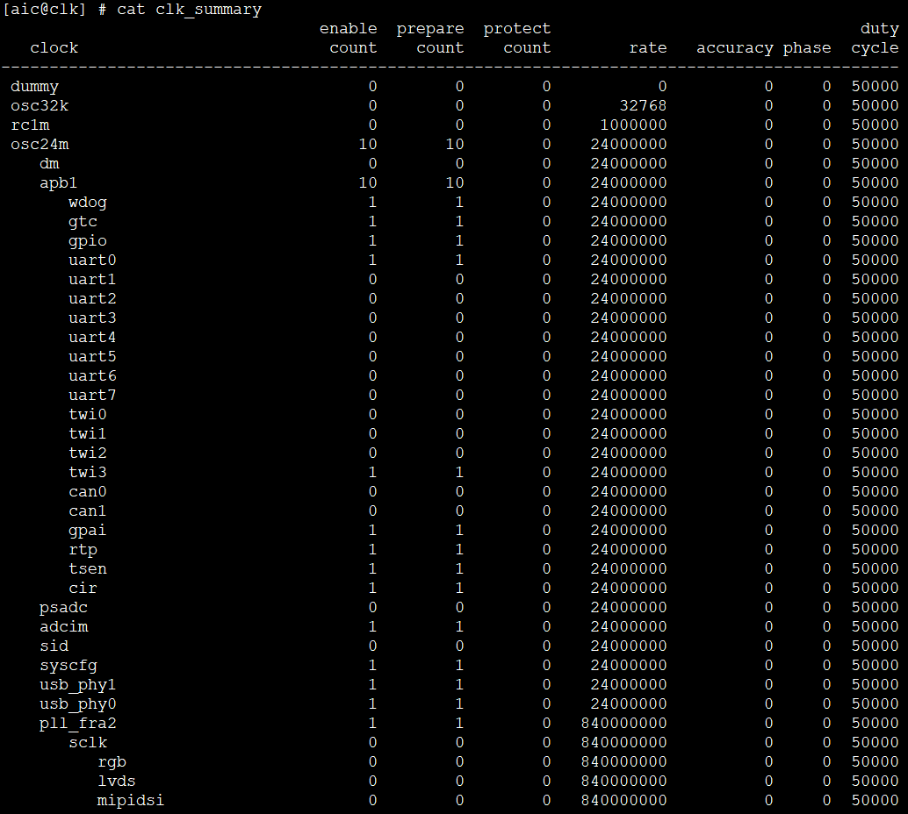
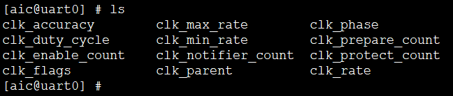
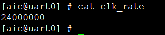

调试指南
4 Dec 2024
Read time: 1 minute(s)
CMU 调试包含以下步骤：
- 确保打开 Debugfs。SDK 中默认已打开
Debugfs，也可以通过以下配置打开：
Kernel hacking---> Generic Kernel Debugging Instruments---> Debug Filesystem Debugfs default access(Access normal)--->内核的 CCF 框架中定义了用于调试的接口，如需调试，仅需打开 Debugfs 开关即可。
- 保存配置并重新编译内核。
- 通过以下命令将 Debugfs
挂载到/sys/kernel/debug。
mount -t debugfs none /sys/kernel/debug
内核启动后，
Debugfs默认未挂载。 - 按以下步骤调试 Clock Debugfs：
- 打开 Debugfs
目录：
cd /sys/kernel/debug/clk
该目录存储了内核中注册的所有时钟。使用 ls 命令可查看所有注册的时钟：

- 通过 summary
结点打印系统的时钟树。
cat clk_summary
Summary 结点位于 /sys/kernel/debug/clk 目录下。系统时钟树会显示系统中各个时钟的父子关系、频率和使能计数等信息：

- 除了在时钟树中查看时钟的频率，也可以通过各个时钟，单独查询其时钟频率。以 uart0 为例进行：
- 在 /sys/kernel/debug/clk 目录中，打开
uart0 目录。
在 uart0 目录中，可以看到一系列结点，并能显示 uart0 时钟的各个属性。

-
执行 cat clk_rate 命令读取 uart0 的时钟频率：

- 在 /sys/kernel/debug/clk 目录中，打开
uart0 目录。
- 设置 clk_rate。默认情况下，clk_rate 结点为只读，即只能读取时钟频率而不能设置频率。如需设置频率，需将 clk_rate 的属性改为读写属性。具体设置如下：
- 打开 menuconfig 中的下列配置，生成宏
DEBUG：
Kernel hacking---> ArtInChip Debug---> [*] CMU driver debug在编译时，会根据该宏在 gcc 的-D 选项参数后定义宏 DEBUGFS。
-
在源码 drivers/clk/clk.c 文件中，注释 //#undef CLOCK_ALLOW_WRITE_DEBUGFS。
- 修改源码后重新编译内核，clk_rate 结点的属性即变为可读写。
- 通过以下命令，设置模块的时钟频率：
echo target-frequency > clk_rate
- 打开 menuconfig 中的下列配置，生成宏
DEBUG：
- 打开 Debugfs
目录：